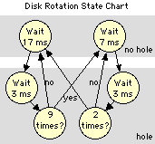

On this page
• physical format
• label format
• directory format
• date format
• i/o port operation
• internal structure
• uninitialized disks
• h-17 driver notes
• preferences
Related links
H-17 Disk System
This page will describe the H-17 disk system as implemented in the original H8, and the implementation decisions that were made when building the emulator.
H-17 Physical Disk Format
Sector Format
Each sector starts immediately following the trailing edge of the sector hole. The sector has a constant header, which is written only when the disk is initialized, and a data portion that can change.
Both Read and Write will read the sector header to determine whether they are flying over the correct part of the disk, before they begin their operation.
The header consists of:
- a sync pattern — a number of 000q bytes followed by the sync byte (375q);
- the volume number (on tracks 1-n; on track zero the volume number is zero);
- the track number (0-n);
- the sector number (0-9);
- a checksum character.
The data portion follows a short distance later and consists of:
- a sync pattern (same as above);
- 256 bytes of data;
- a checksum character.
The checksum is a very simple beast. It's calculated as follows:
* (A) = output byte
* (D) = running checksum
*
XRA D
RLC
MOV D,A
The checksum is initially set to the value of the sync byte (375q) so that when the sync byte is written to disk the resulting checksum will be zero. Thus, the checksum does not include the sync byte but includes all bytes following the sync byte, and it is initially zero.
Overall Disk Layout
The first nine sectors contain the boot image. This code is copied from the body of the Init program. The tenth sector is the label (see Disk Label Format below).
When a disk is initially formatted, the data portion is written with a "test pattern" that consists of the letters "GL" repeated 128 times. The memory of HDOS-designer Gordon Letwin lives on in the surface of initialized H-17 disks.
The first 10 sectors of the disk are recorded with a volume number of zero. This is to allow the volume to be partially mounted without knowing the volume number. The label sector contains the volume number that is written in the header of the remaining sectors.
There are ten sectors per track, numbered zero through nine.
The number of tracks per disk depends on the disk density and number of sides:
- Single-side, high-density — 40 tracks (0-39), 400 sectors;
- Single-side, quad-density — 80 tracks (0-79), 800 sectors;
- Double-side, high-density — 80 tracks (0-79), 800 sectors;
- Double-side, quad-density — 160 tracks (0-159), 1,600 sectors;
The double-sided disks put the even-numbered tracks on the bottom surface and the odd-numbered tracks on the top surface. Each physical position of the read/write head can access two tracks. The emulator refers to physical tracks and logical tracks to draw a distinction between the number of read/write head steps and the numbered-track count.
Low-level driver software considers the disk to be an array of sectors starting at zero and extending to the last sector on the disk. To convert from a logical sector number to a logical track number, divide by ten. The remainder from this division will be the sector number on that track. On single-sided disks, the logical track number is also the physical track number. To convert to physical track number on a double-sided disk, shift the logical track number right one bit to divide by two. The low-order bit shifted out is the side number (0 or 1).
Sector Holes and Sector Hole Timing
The H-17 uses hard-sectored disks, using a physical hole in the disk to mark the beginning of each sector's "wedge" on the disk surface. There are ten sectors per track so you might expect ten holes per disk. In fact, there are eleven — the eleventh hole is a track index hole positioned midway between two of the others, used to mark the start of the track.
The disk rotates at 300 RPM. That's 5 RPS, or 200ms per rotation. Which leaves 20ms for each sector.
As the disk is rotating, a bit in a status register indicates when a hole is passing above a light sensor. The emulator assumes that a hole will sit above the sensor for 3ms, which is a very close approximation of reality.
Thus, when the disk motors are on and a disk is inserted in a drive, the emulator will indicate "no hole" for 17ms, then "over hole" for 3ms, for nine sectors. For the tenth sector, where we have the extra index hole, the emulator will indicate "no hole" for 7ms and "over hole" for 3ms. This is repeated twice. The process is illustrated in the state diagram.
Disk Label Format
The tenth sector on the disk (track zero, sector 9) is the label sector, which is formatted as follows:
- 0 = Data-only volume
- 1 = Bootable volume
- 2 = Disk with no directory
- 00000000B — 40 tracks, 1 side
- 00000001B — 40 tracks, 2 sides
- 00000010B — 80 tracks, 1 side
- 00000011B — 80 tracks, 2 sides
|
Offset |
Length |
Name |
Description |
|---|---|---|---|
|
0 |
1 |
lab.ser |
Disk serial number, recorded in sectors 10-n |
|
1 |
2 |
lab.ind |
Date disk was initialized |
|
3 |
2 |
lab.dis |
Logical sector number of the first directory sector |
|
5 |
2 |
lab.grt |
Logical sector number of the Group Reservation Table (GRT) |
|
7 |
1 |
lab.spg |
Sectors per group (2, 4 or 8) |
|
8 |
1 |
lab.vlt |
Volume type: |
|
9 |
1 |
lab.ver |
Version of init.abs that initialized the disk |
|
10 |
2 |
lab.rgt |
Logical sector number of the Reserved Group Table (RGT) |
|
12 |
2 |
lab.siz |
Number of sectors on the disk |
|
14 |
2 |
lab.pss |
Physical sector size (constant 256) |
|
16 |
1 |
lab.vfl |
Volume flags |
|
17 |
60 |
lab.lab |
Printable volume label |
|
77 |
2 |
|
reserved |
|
79 |
1 |
lab.spt |
Sectors per track (constant 10) |
The remainder of the label sector is not used by HDOS.
Refer to directory format for the use of the lab.dis field, and to h-17 driver notes for the use of the lab.grt and lab.rgt fields. The lab.ver and lab.vfl fields can be used to determine the physical disk format (sides and physical tracks) as follows:
|
Label Fields |
Disk Format |
||||
|---|---|---|---|---|---|
|
lab.ver |
lab.vfl |
lab.siz |
lab.spg |
Tracks |
Sides |
|
16h |
n/a |
0 |
2 |
40 |
1 |
|
20h |
00000000B |
400d |
2 |
40 |
1 |
|
20h |
00000001B |
800d |
4 |
40 |
2 |
|
20h |
00000010B |
800d |
4 |
80 |
1 |
|
20h |
00000011B |
1600d |
8 |
80 |
2 |
The emulator uses these fields while saving disks to make sure that the correct number of sectors is saved in the correct sequence.
Directory Format
The H-17 disk directory consists of a number of directory blocks filled with directory entries. We'll start at the bottom and work up.
Each directory entry is 23 bytes long and is laid out as follows:
- 10000000B — system file (S)
- 01000000B — flags locked (L)
- 00100000B — write protected (W)
- 00010000B — contiguous (C)
|
Offset |
Length |
Name |
Description |
|---|---|---|---|
|
0 |
8 |
dir.nam |
File name |
|
8 |
3 |
dir.ext |
File name extension |
|
11 |
1 |
dir.pro |
Project (unused, set to 0) |
|
12 |
1 |
dir.ver |
File version (unused, set to 0) |
|
13 |
1 |
dir.clu |
Cluster factor |
|
14 |
1 |
dir.flg |
Flags: |
|
15 |
1 |
|
reserved |
|
16 |
1 |
dir.fgn |
First group number |
|
17 |
1 |
dir.lgn |
Last group number |
|
18 |
1 |
dir.lsi |
Last sector index (in last group) |
|
19 |
2 |
dir.crd |
File creation date |
|
21 |
2 |
dir.ald |
File alteration date |
An entry who's file name starts with 377q is an empty entry which can be reused. An entry who's file name starts with 376q is an empty entry, and all following entries are also empty. This is a useful flag for HDOS so that it doesn't have to continue searching for a given file.
(See h-17 driver notes for a description of how the dir.fgn, dir.lgn and dir.lsi fields are used to determine the size and location of the file.)
Each directory block is 512 bytes (two sectors) long, and consists of 22 directory entries followed by entry length and link information, as follows:
Offset |
Length |
Name |
Description |
|---|---|---|---|
0 |
506 |
— |
22 directory entries |
506 |
1 |
— |
constant 000q |
507 |
1 |
dir.enl |
Entry length (027q) |
508 |
2 |
dir.sec |
Logical sector number of beginning of this block |
510 |
2 |
dir.lnk |
Logical sector number of beginning of next block |
The directory occupies contiguous space on the disk, but the entries are not in sequential order. Rather, they are interleaved in that space. The sector number of the first sector of the first directory block is in the lab.dis field of the label. The sector number of the first sector of the next block is in the dir.lnk field at the end of the block. The last block has a dir.lnk of zero.
The number of blocks is calculated based on the size (sectors per group) of the disk. For example, a 100K disk will have 9 blocks (18 sectors) in its directory, while a 200K disk will have 10 blocks (20 sectors). The size is calculated such that the directory can hold the maximum number of files possible, which is equal to the number of free groups after the overhead space (track 0, directory, grt.sys and rgt.sys) is removed.
Init.abs tries to place the directory and GRT in a favored spot near the center of the disk, but if sufficient contiguous sectors are not available due to bad sectors it will scan for a large enough block. The following examples show the preferred location of the directory and the block interleaving order.
40-track, 1-sided disk:
- block runs from logical sector 130 (track 13, sector 0) through logical sector 149 (track 14, sector 9);
- interleave order: 132, 136, 130, 134, 138, 142, 146, 140, 144;
- GRT is at logical sector 148;
- logical sector 149 is unusable as part of the 2-sector GRT group (spg = 2).
40-track, 2-sided disk:
- block runs from logical sector 260 (track 26, sector 0) through logical sector 283 (track 28, sector 3);
- interleave order: 264, 266, 260, 262, 268, 270, 276, 278, 272, 274;
- GRT is at logical sector 280;
- logical sectors 281 through 283 are unusable as part of the 4-sector GRT group (spg = 4).
The interleaving of the clusters as allocated in the GRT matches the interleaving of the blocks as expressed in the dir.lnk field. (It's not necessary that this be the case, so I thought I should point it out.)
The RGT is generally placed at logical sector 10.
The directory entries for rgt.sys, grt.sys and direct.sys are placed at the end of the second directory block, leaving 41 empty directory entries in the first two directory blocks. In practice, it's a rare 40-track single-sided disk that has more than 41 files on it, so an old trick to increase available space was to set dir.lnk to zero on the second directory block and return the remainder of the directory to the free chain (ref. h-17 driver notes) for a net gain of 14 free sectors. The advent of larger disks effectively ended that practice.
Date Format
This isn't really a disk topic, but since there are so many dates in the structures described above, it seems like a reasonable place to cover the topic.
HDOS stores dates in a packed, 16-bit format. Year is stored as the number of years since 1970. Month and day are stored as is. Consider the date 27-Jan-92. HDOS would store that date as follows (in binary):
0010110000111011 = 27-Jan-92
Storage order is year, month, day. Year gets 7 bits, month gets 4, and day gets the remaining 5 bits:
0010110 0001 11011 = 27-Jan-92
------- ---- -----
year mnth day
| | |
| | +--- 27d
| +-------- 1d (Jan=1, Feb=2, etc.)
+--------------- 22d (70 + 22 = 92)
In split octal, this date is 054.073A. HDOS will store the date in the normal low-order-byte first order used to store all 16-bit numbers, so this date would appear in the label or directory as 073 054.
It should be readily apparent that the year must be between 70d and 99d to be valid. It should also be readily apparent that HDOS is not Y2K compliant! Which is a real shame, since the 7-bit year field is large enough to hold values from 00 through 99, which is Y2K compatible. I guess Gordon Letwin didn't think that we'd still be fooling with the thing 20-some years later.
Fixing this would be a relatively easy mod, if someone had all the source. The author's solution was to backdate his files to the previous decade.
I/O Port Operation
There are five I/O ports that control H-17 operation:
- 174q — the data I/O port
- 175q — this port holds the fill character (output) and the status flags (input)
- 176q — this holds the sync character (output) and resets synchronization on input
- 177q — disk control port
- 362q — HA-8-8 (ORG/0 card) control port; holds the side selection bit
The fill character is only used to zero an entire disk track prior to initializing it. That fits very poorly with the internal structure used by the emulator, so this port is ignored.
The status flags on port 175q are:
- 00000001B — received data is available
- 00000010B — receiver overrun (not possible in this implementation)
- 00000100B — receiver parity error (not used)
- 01000000B — fill character transmitted (not used)
- 10000000B — transmitter buffer empty
The sync character and reset sync functions are used to find the start of either the sector header or the sector data. The driver OUTs the sync character (375q) to port 176q then INs port 176q to reset sync. The hardware goes on a bit-by-bit search for the sync pattern, which has been written to the disk following a string of zeros. When the sync character is located, sync detect is raised on the disk control port (see immediately below). The sync character is returned on the data port. The next character read will either be the first byte of the sector header (volume serial number) or the first byte of user data.
An IN to the disk control port (177q) will return the following values:
- 00000001B — hole detect; there is a hole above the sensor
- 00000010B — track zero detect; the head has been stepped all the way out
- 00000100B — write protect; the write protection tab has been covered
- 00001000B — sync detect; see description immediately above
Write protect can be set or reset when a disk is inserted in an emulated drive. Write protection status is saved with the disk image on the Mac hard drive so that at next mount it will still be write protected.
(The distribution disk that comes with the emulator package is internally coded for permanent write protection; you cannot unprotect this image without editing the disk file.)
The disk drive is controlled by OUTing one or more of the following flags to the control port (177q):
- 00000001B — write gate enable; when set the drive will write, otherwise it will read
- 00000010B — drive select 0 (sy0:)
- 00000100B — drive select 1 (sy1:)
- 00001000B — drive select 2 (sy2:)
- 00010000B — motors on (starts all three drives)
- 00100000B — head step direction (0 = out toward track zero)
- 01000000B — step (active on — see below)
- 10000000B — write enable H-17 controller ram (see below)
Head step is performed by setting the direction bit, then by setting then resetting the step bit. In the emulator, we will step the head in the set direction (1 = toward a higher-numbered track; 0 = toward a lower-numbered track) when the step bit transitions from zero to one. No action will be taken when the bit goes back to zero.
There is 1K of RAM installed on the H-17 disk controller card, addressed at 024.000A. This RAM is write protected. Setting the high bit of the control port unprotects this RAM. HDOS uses this RAM for workspace.
In this emulator, for performance reasons, the write protect flag controls the entire lower 8K of the address space. (If you set this bit, you will be able to overwrite the PAM/8 and HDOS ROMs if you want to. Be careful. But note that the ROMs are reloaded when the H8 is reset, so this is not a fatal condition.)
The HA-8-8 hardware control port is a part of the so-called ORG/0 card, the 1/4 card that plugged backwards into bus slot 10. Bit 01000000B is the side select bit: '0' selects side zero and '1' selects side 1. This I/O port is also used to map RAM into the low 8K of address space in order to support the Heath distribution of ORG/0 CP/M, but that functionality is outside of the scope of this emulator.
Operational Signatures
There are certain operational patterns that can be counted on to synchronize the emulated disk system with HDOS by using only the disk control ports. Refer to the state chart.

Input Sync — The driver will OUT the sync pattern then IN port 176q to reset sync. On the next IN to the control port, the emulator reports synchronization. The Receive Data Available bit will be latched on, and the next IN to the data port will get the sync character. The next input byte will be either the volume serial number or the first data byte, depending on which phase of the read we're on.
Output During Init — During disk init, the driver will turn on the write gate immediately after Hole Detect goes away. The emulator "eats " the sync pattern, then gets the volume, track and sector numbers and a checksum. HDOS writes the checksum four times to ensure that the write gate stays on long enough to completely write the byte; all but the first will be ignored by the emulator. When initializing the data portion of the sector, the emulator expects a sync pattern followed by 256 data bytes and a checksum (four times, as above).
Normal Output — When writing only the data portion of the sector, the driver first reads the sector header to verify that it is over the correct sector. It will then turn on the write gate and write a sync pattern followed by 256 data bytes and a checksum (four times, as above).
Sector Skip — When searching for the correct sector, the driver will read each header in turn after Hole Detect resets. HDOS feels free to abandon this read early if it has enough information to know that it's on the wrong sector. To keep from feeding sector data when the driver is looking for header, if sufficient time goes by without an IN while we're positioned in the header or at the front of the sector body, the emulator steps to the next header and sets up for another read.
It's important to note that there is no coordination within the emulator between the various read/write states and sector hole pulse generation.
Emulator Internal Disk Structure
Here the internal structure of an H-17 disk:
typedef struct {
unsigned char volume, // volume number
track, // track number
sector, // sector number
checksum; // header checksum
} sectorHeader;
typedef struct {
unsigned char data[256];
unsigned char checksum; // data checksum
} sectorBody;
typedef struct {
sectorHeader header;
sectorBody body;
} sector;
sector disk[80][2][10]; // a complete disk
The three indices on the disk definition are:
- number of tracks (40 or 80);
- number of sides (1 or 2);
- number of sectors in a track (10).
The largest format disk would take up around 417K of RAM when mounted.
The emulator doesn't carry the leading zeros and sync byte in the saved disk image. It does carry a small header on the disk image that's written to the Mac hard disk, in order to keep track of whether the H-17 disk is write protected, and to record the format of the disk (number of sides and tracks):
Field |
Size (bytes) |
Values |
Description |
|---|---|---|---|
file marker |
2 |
"377q, 300q " |
Confirms that this is an H-17 image |
protection |
1 |
0=none |
Disk write protection flag |
volume |
1 |
variable, 0-255 |
Volume serial number |
sides |
1 |
1, 2 |
Number of sides |
tracks |
1 |
40, 80 |
Number of tracks/side |
sectors |
1 |
10 |
Number of sectors/track |
Nine bytes of reserved filler are included for future expansion, to make this an even 16 bytes.
The emulator saves disk images in two formats, binary and printable ASCII, selectable via the Diskette Management dialog box. The binary version is private to this emulator implementation and is used simply to save space on the Mac hard drive. In the binary version, there are no spaces, delimiters, or comments. Otherwise, the formats are identical.
The printable ASCII format is called the "portable " format, and is used for compatibility purposes when moving diskettes between H8 emulators. This format is also used by Dave Wallace's emulator (ref. other heathkit links on the resources page).
Comments are allowed in the portable format; they start with a semicolon in column 1. All comments are ignored when loading the disk image. Embedded spaces and end of line sequences (either CR, LF, or CR/LF) are ignored. The emulator handles any of the three possible line-ending sequences, or no line-ending sequence; the file can potentially be nothing but a very long string of 3-digit groups.
Comments are not allowed at the very beginning of the file. The file must start with the complete 16-byte header or it will not mount.
As of release 5.3.0, if a comment of the form:
;check: nnn
...follows the body of a sector, the check byte calculated for the sector body is compared with nnn. If they do not match, it is likely that the sector body text has been altered or corrupted. The disk will not mount.
When the emulator dismounts a disk in portable format, a comment including the printable disk label is included following the header, and a comment precedes each sector giving the track and sector number. There is a space following each 3-octal-digit group, and a carriage return every 16 3-octal-digit groups. As of Release 5.3.0, the emulator includes the ";check: " comment following each dumped sector.
The sector header (volume serial number, track and sector number) and all checksums are regenerated when the disk image is mounted.
Uninitialized Disk Handling
An unformatted emulator disk image has the sides field set to zero in the file header. This will be corrected when the disk is saved following a format. If the image is dismounted before formatting, this field will be written as zero on the hard drive image and read back in on next mount so the emulator knows the disk has not been formatted.
During disk load, the disk content data structure will not be initialized for any disk with the sides field set to zero. A constant (effectively "garbage ") will be returned on any IN to the data port. This will prevent an uninitialized disk from being mounted.
A disk format operation can easily be detected, as this is the only time that HDOS writes to the sector headers. The emulator will set sides to 1 in this case to flag that that data IN can now return real data. The correct sides value will be set when the diskette is dismounted. (We only use these values when the disk is first loaded.)
This eliminates the need for the user to specify the format of the disk twice, once when it's mounted and once when it's formatted, making operation of the emulator feel more natural to the user.
H-17 Driver Notes
This design note contains a number of notes on the operation of the H-17 disk drivers. They should prove useful to anyone else contemplating an implementation of the H-17, especially if they are crazy enough — like me — to try to hand-build diskettes.
Low-level driver access
The low-level driver implemented mostly in the H-17 ROM (address 030.000A thru 037.377A) treats the diskette as an array of sectors numbered zero through 'n' where 'n' is the maximum sector count minus one, disk-format dependant. You can read or write any number of contiguous sectors starting from any sector index in the array.
On a two-sided disk, the tracks alternate sides, with the even-numbered tracks on one surface and the odd numbered tracks on the other. A 40-track, two-sided disk will have 80 logical tracks. They are assumed by the low-level driver to be an array of 800 sectors, starting at track 0 sector 0 and ending at track 79 sector 9.
Sectors zero through nine have a volume number of zero in the sector header (ref. physical disk format). The remaining sectors have the correct volume number in their header. This volume number can be found at the beginning of the volume label in sector nine (ref. disk label format).
Programs access the driver via a call to D.SYDD at 40.130A. Register use depends on the function being used. In all cases, register (A) contains the function code. The codes most useful to application programs are:
Name |
Value |
Use |
|---|---|---|
DC.REA |
000q |
Read contiguous sectors |
DC.WRI |
001q |
Write contiguous sectors |
DC.RER |
002q |
Read Regardless — ignore serial number protection on track zero |
DC.ABT |
007q |
Abort (e.g., clean up) the driver |
DC.MOU |
010q |
Mount a disk (record volume number) |
|
DC.RDY |
012q |
Check to see if the disk is "ready" (inserted and spinning) |
Mount is a low-level mount that effectively records the volume number so you can read sectors 10 and up. (You can use Read Regardless to read track zero when the disk is already mounted with the proper serial number.) This mount call is used as an early step in the full HDOS mount process. Register (L) contains the volume serial number.
DC.RDY returns with 'C' set if the disk is not ready.
For the read/write calls, the registers are used as follows:
|
Reg Pair |
Usage |
|---|---|
|
(HL) |
Sector index to start read/write from |
|
(DE) |
Buffer location |
|
(BC) |
Length in bytes of the read/write operation |
The driver supports reads of non-integral numbers of bytes. There are few examples of this in practice, but you can see one such example in the HUG SY: driver.
The cell AIO.UNI at address 41.061A must contain the disk unit number (binary 0-2) before calling the driver.
Example: The following code will mount a disk on drive 1, read the label, mount the disk with the correct volume number, and read the first directory block:
* Using low-level disk driver calls, mount a disk
* and read the first directory block.
*
* Written and tested 30-Jun-2001, DAS
* Added READY call 2-Jul-2001, DAS
*
AIO.UNI EQU 41061A Disk unit number (0, 1, 2)
D.SYDD EQU 40130A Addr of jump to driver
LAB.SER EQU 0 Label offset of volume serial number
LAB.DIS EQU 3 Label offset of first directory sector
*
DC.REA EQU 000Q Read driver command
DC.ABT EQU 007Q Abort the driver
DC.MOU EQU 010Q Mount driver command
DC.RDY EQU 012Q Check for disk ready
.EXIT EQU 0 Exit HDOS scall command
.PRINT EQU 3 Print HDOS scall command
*
ORG 100000A Above dbug
*
START EQU *
MVI A,1
STA AIO.UNI Set unit number
MVI A,DC.ABT
CALL D.SYDD Clean up the driver
*
LXI H,MNT.MSG
SCALL .PRINT
*
READY EQU *
MVI A,DC.RDY
CALL D.SYDD
JC READY Wait for ready
*
MVI L,0 (L) = Volume number
MVI A,DC.MOU
CALL D.SYDD Mount as volume zero
*
LXI H,9
LXI D,LABEL
LXI B,256
MVI A,DC.REA
CALL D.SYDD Read the label
*
LDA LABEL+LAB.SER
MOV L,A (L) = Volume number
MVI A,DC.MOU
CALL D.SYDD Remount with correct volume serial
*
LHLD LABEL+LAB.DIS (HL) = First directory sector
LXI D,DIRECT
LXI B,512 Two sectors this time
MVI A,DC.REA
CALL D.SYDD Read first directory block
*
XRA A Set breakpoint here and inspect buffers
SCALL .EXIT
*
MNT.MSG DB 'Insert a disk in drive SY1:',212Q
LABEL DS 256
DIRECT DS 512
END START
I believe it's a good idea to abort the driver before using it in this fashion, in case there was a pending operation or previous error that's left it in an unknown state. It certainly won't hurt, and I notice that HDOS does it quite often.
Who uses low-level disk access
Low-level disk access is used:
- by the boot routines to read the boot code (sectors 0-8), the directory, GRT.SYS and HDOS.SYS;
- by HDOS itself to read the directory;
- by HDOS itself to read the overlays, HDOSOVL0 and HDOSOVL1.
There may be other users as well, but these are the main ones.
HDOS.SYS must be read using low-level driver calls, as the file-system logic to follow the GRT bitmap is itself contained in HDOS.SYS. The overlays are read this way purely for speed and convenience. Because they are read using low-level driver calls, HDOS.SYS and the overlays must occupy contiguous sectors on the disk. Sysgen ensures that this is the case (see below), and makes sure that the invisible Contiguous flag is set in the directory entry for each file. This is checked at boot time and an error displayed ("disk has been improperly sysgened") if this flag is not set.
Sysgen
Sysgen makes a formatted disk bootable by copying system files onto the disk and setting the volume type flag in the label sector to SysVol (ref. disk label format).
The boot code in sectors 0-8 is present on every disk, bootable or not, and is actually the first 2K (maximum) of the Init program, starting at address 42.200A.
When copying files to the new disk, Sysgen ensures that HDOS.SYS and the overlays are copied to contiguous sectors, and sets the Contiguous flag in the directory entry.
Under HDOS 2.0, you can use three forms of the Sysgen command:
|
Command |
Action |
|---|---|
|
sysgen |
Copy standard files to the new volume |
|
sysgen *.* |
Copy all files to the new volume |
|
sysgen /min |
Copy the minimum required files to the new volume |
Note that the first form of the command requires that a particular set of "standard files" be present on the disk with sysgen or the command will fail.
I generally sysgen one disk with the /min option, copy on the files that I know I'll want on every disk (flags.abs, any drivers, etc.), do any customization required (using the Set command), and copy on Sysgen itself. This becomes my master Sysgen disk. From this point forward, I'll "sysgen *.*", delete sysgen.abs, and then add files as necessary for that disk.
High-level access
HDOS imposes a high-level file system onto the low-level driver. Files can be scattered about using any free set of sectors on the disk; HDOS makes sure that the sectors are read in the correct order, making multiple calls to the low-level driver as required.
Sectors are allocated in clusters, or "groups" in HDOS terminology. There are 200 groups on the disk. On the standard 100K disk, each group is two sectors, 40-track 2-sided disks and 80-track single-sided disks have 4 sectors per group, and 80-track 2-sided disks have 8 sectors per group.
On a 100K disk, the first five groups (sectors 0-9) are reserved, leaving 195 groups for files. The directory file, direct.sys, occupies several groups as well (ref. directory format), as do the group reservation table (grt.sys) and the reserved group table (rgt.sys).
The directory contains, among other things:
- the file name and extension;
- the index of the first group allocated to the file (dir.fgn);
- the index of the last group allocated to the file (dir.lgn);
- the number of sectors (1thru 8, depending on disk format) used in the last group (dir.lsi).
(Ref. directory format)
The group index is used as an index into the GRT file. The byte at that offset is the index of the next group in the file. The byte at that offset is the index of the next group, and so on. The last group index will have zero in the GRT.
The number of sectors in the file is equal to the number of groups used minus one, times sectors per group, plus the last sector index.
Example (assumes a 40x1 disk):
first group = 010q
last group = 017q
last sector index = 1
GRT, starting at offset 010q:
011 012 016 014 015 204 017 000
How to read this file chain:
010 points to 011
011 points to 012
012 points to 016
016 points to 017
017 is last group (000q)
Our file has three contiguous groups (010, 011 and 012, 6 sectors), skips over a fragment of another file (or a part of the free chain), then has two more contiguous groups (016 and 017, 4 sectors). It is nine sectors long (4 full groups and one partial). HDOS can read this file with two calls to the low-level driver:
Call #1: (HL) = sector = 010q * 2, or 020q
(BC) = length = 6 * 256
Call #2: (HL) = sector = 016q * 2, or 034q
(BC) = length = 3 * 256
The first group in the GRT (index=0) is the chain of free groups on that disk. This chain is reconstructed whenever the disk is mounted.
The file RGT.SYS is used to flag reserved groups. These include the first five groups on the disk and any groups containing bad sectors, as entered during the last step of init. These are all marked with 377q.
At mount time, HDOS zeros all RGT bytes that are not equal to 377q. It then follows the allocation chain of every file in the directory, incrementing the RGT byte corresponding to each GRT index. At the end of this process:
- any RGT byte that contains zero represents a free group that will be added to the free chain;
- any RGT byte that's less than 377q and greater than 1 represents a disk system error — two or more files are sharing the same disk space.
That last condition will result in a "this disk is corrupt" error message at mount.
Preferences
The preferences file will retain the user's preferences for diskettes that may be automatically mounted when the emulator is started. The Release 5 preferences file layout is as follows:
typedef struct {
unsigned char version; // = 5
struct {
mountPref pref; // mount preference
FSSpec file; // file spec
char tracks; // 1 = 80-track drive
} drivePref[3]; // preferences for three drives
struct {
char cursor; // 0 = underline, 1 = block
RGBColor textColor, // future expansion
screenColor; // future expansion
char reverse; // future expansion
} h19Pref; // preferences for H-19
struct {
char speed; // system speed pref
char remember; // 1 = remember window locations
Point guiTLC, // top-left corner, gui
h19TLC, // " " " h-19
h17TLC; // " " " h-17
OSType atCreator; // creator for FTP files
OSType h19Creator; // creator for H-19 buffer saves
int prTop, // printer margin: top
prBottom, // bottom
prLeft, // left
prRight, // right
pamRom; // PAM/GO=1
} emuPref; // preferences for emulator
} prefFile4, *prefFilePtr4;
Preferences file version 4 starts with release 5.3.2.
Preferences file version 5 starts with release 5.3.3.
The three mount preference settings operate as follows:
- None
-
The next time the emulator starts, the drive will be empty.
- Last Mounted
-
When the emulator is quit, the name of the diskette that's currently on the drive, if any, is saved. The next time the emulator starts, that disk will be automatically inserted in the drive.
If there is no disk in the drive at quit time, the drive will be empty on next start. But the "Last Mounted" preference will remain. The next time you quit the emulator with a disk in the drive, that disk will be in the drive when you next start the emulator.
If the diskette insertion fails for some reason (i.e., the diskette file was deleted), the preference will be changed to None.
- Specific Disk
-
You will be prompted to select a disk to be mounted on the drive. The drive is not changed immediately; the diskette name is saved and it is inserted automatically the next time the emulator is started.
If the diskette insertion fails for some reason (i.e., the diskette file was deleted), the preference will be changed to None.
The 80-track flag is used only when inserting a 40-track disk into an 80-track drive. In these cases, the HUG SY: driver will double-step the drive under the assumption that it's reading a fat track with a narrow read head. The emulator has to load every other track in order to allow this "compatibility mode" mount.
The HUG SY: driver will simulate write protection with a compatibility-mode mount, but the emulator will further ensure that a 40-track disk mounted on an 80-track drive is never saved.
It must be emphasized that mount preferences have no impact on the drive contents when they are set. They only impact drive contents when the emulator is next started.
Release 5 adds a second preferences dialog box and the ability to set two preferences unrelated to the disk system. This item was placed here as the preferences dialog is handled by the same code module as handles the H-17 preferences.
The new preferences are:
- Underline or Block cursor
-
Sets the default cursor type on the H-19 terminal window. Configuration escape sequences can change the cursor type as always, but when the terminal is reset, this default cursor is used.
- System speed
-
The user can set the default speed of the processor to 2, 4 or 8 mhz or to Turbo. Once the system is started, the speed can be changed on the Speed menu.
The default of 2 mhz should be selected if you are using HDOS 2.0 with the original H-17 driver. This driver has a bug that prevents booting when the CPU operates at high speeds. HDOS 1.6 and HDOS 2.0 using the HUG replacement driver (available in the HDOS Utilities section of the release page) boot correctly on a high-speed system.
- File creator
-
The file creator code for AT: driver file transfers and H-19 buffer saves are configurable, allowing the user to select which application should open these files. The default is 'ttxt' (SimpleText). If the H-19 buffer creator is set to 'ttxt', H-19 will write a 'styl' resource to the resource fork so that SimpleText automatically gets the correct font and size.
- Printer margins
-
All four margins default to 36 points, or 1/2 inch. Each margin is individually configurable. If the configured font size is less than the printer's minimum for that margin, the user will be asked to cancel or allow the emulator to increase the value to minimum to prevent clipping. That new minimum will replace the users value in the preferences file.
- PAM/GO ROM selector
-
Starting in release 5.3.3, the emulator carries both the original PAM/8 ROM image and the PAM/GO ROM image which initializes (PC) to 030000 at system reset. If the pamRom preference is set to 1, the PAM/GO image will be loaded on reset. Otherwise, the original will be loaded.
There is one other preference setting, changed on the Window menu. If "Remember Window Positions" is checked, the location of each window (GUI, H-19 and H-17 Management) is copied to the preferences file. When the emulator is next started, the windows are opened in their remembered positions.
The "Remember Window Positions" setting is itself recorded in the preferences file. If it is off when you quit the emulator, it will be off when you restart the emulator and the saved window positions will be ignored; the windows will open in their default locations.
System preferences take effect at different times:
|
Preference |
Takes effect.... |
|---|---|
|
Cursor type |
Next time the H-19 terminal is reset, via either Esc z or the Reset item on the Window menu |
|
System speed |
Next time the H8 application is started |
|
Creator |
Immediately; used the next time a file is created using the AT: driver or H-19 buffer save |
|
Printer margin |
Immediately; used on the next print job |
|
PAM ROM |
Next time the system is reset |